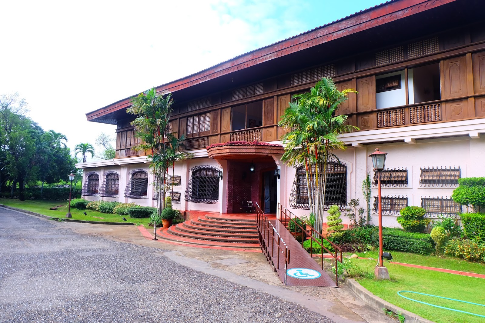

HOME
PAGUDPUD, ILOCOS NORTE
LAOAG, CITY ILOCOS NORTE
PAOAY, ILOCOS NORTE
BATAC CITY ILOCOS NORTE

Malacañang of the North is a famous two-story presidential museum located in the municipality of Paoay in the province of Ilocos Norte. It is just seven kilometers away from Laoag City proper and ten kilometers away from the historical Paoay Church. Malacañang of the North has a size of five hectares or 50,000 square meters that provides tourists with a wonderful view of Paoay Lake. Also, it consists of seven rooms namely the study room, diplomacy room, Overseas Filipino Worker (OFW) room, agricultural room, cultural room, family room, and nation-building room illustrating to visitors some of the significant events during the presidential term of the late Ferdinand Marcos Sr.